TakeHomeEx01
Task
Age-sex pyramid is an analytical visualisation commonly used by demographers to reveal the structure of population by gender and age group. In this take-home exercise, you are required to reveal the demographic structure of Singapore at planning area level by using age-sex pyramid method. Instead of plotting a single age-sex pyramid, however, you are required to display nine selected planning areas on a single view by using trellis display (also know as small-multiple plot).
Tools used
Tableau Prep Builder version 2022.4: Used for data cleaning to removed unnecessary fields and filtering of relevant fields
Tableau version 2022.4
Data Used
Singapore Residents by Planning Area / Subzone, Age Group, Sex and Type of Dwelling, June 2022 should be used to prepare the analytical visualisation. It is available at Department of Statistics, Singapore(in short SingStat).
Presentation
The analytical visualisation would be uploaded onto Tableau Public.
A write-up of the take-home exercise would be prepared in Quarto html document format and published on Netlify.
Cleaning the data
Importing the data
Open up the downloaded dataset in Tableau Prep Builder by dragging the file into the Tableau Prep Builder.

Cleaning up the data
As we are only interested in the Planning Zone (PZ), we will uncheck the SZ box. Since the whole dataset is for the year 2022, the field, Time is also irrelevant, so we will also uncheck that.

Creating new fields


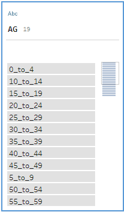

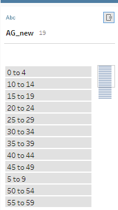
Exporting
Click the + icon next to the dataset and select output


Visualising the data


Create Overview
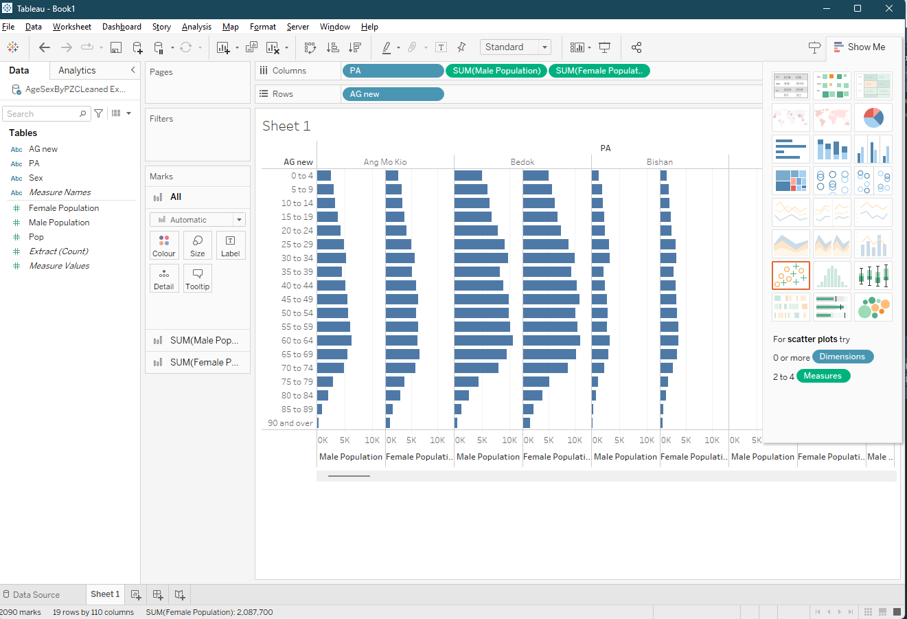
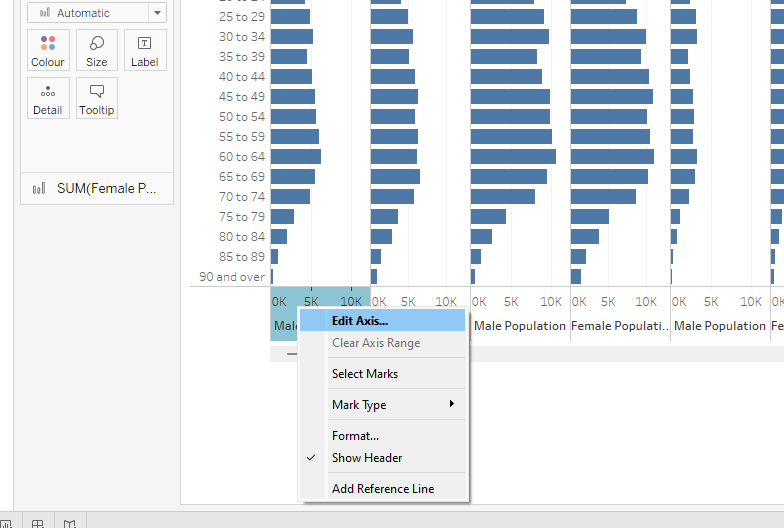
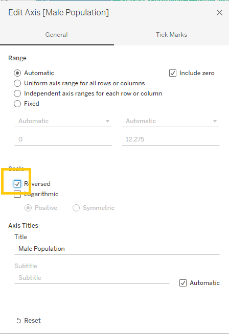
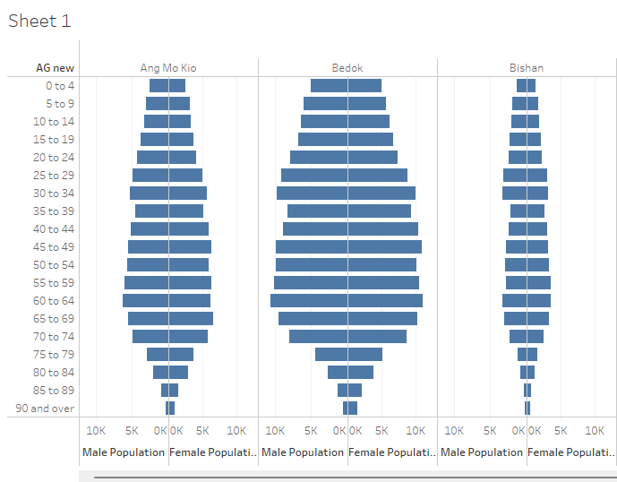
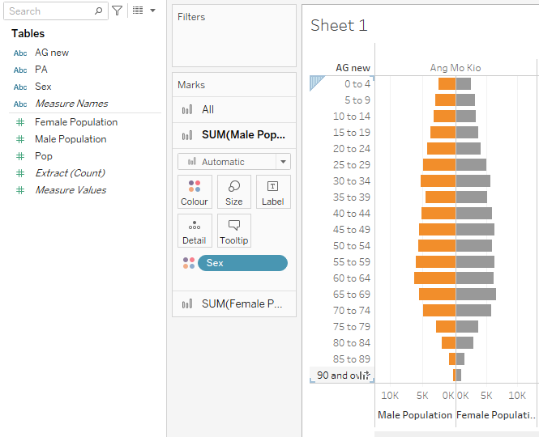
Do the same forfemale
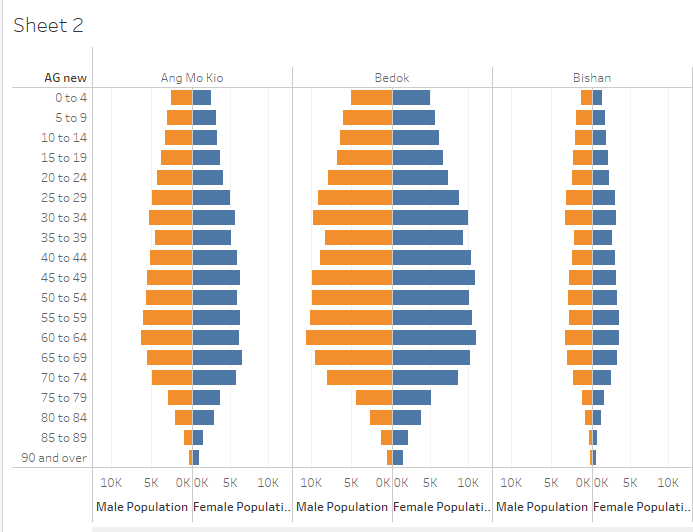
Lbels


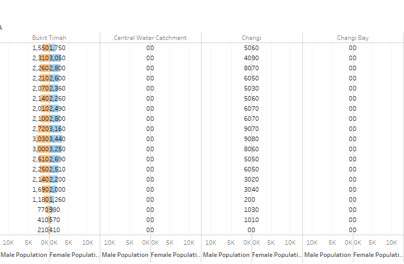
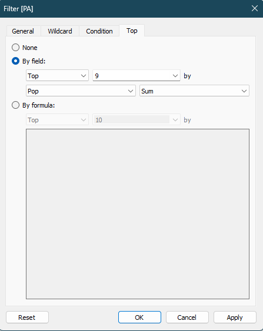
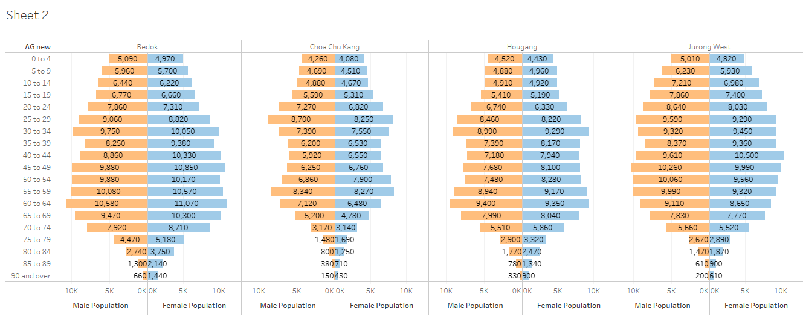

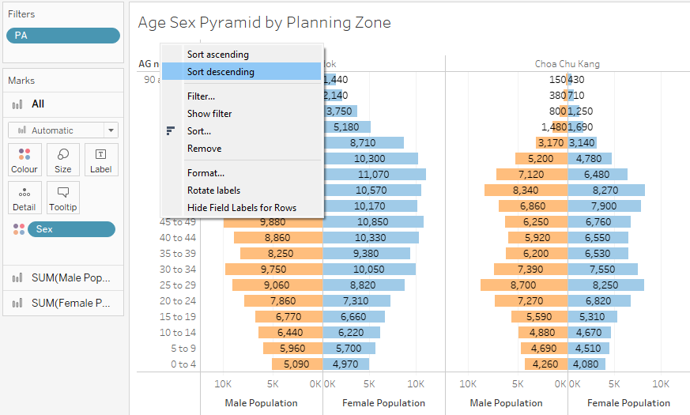